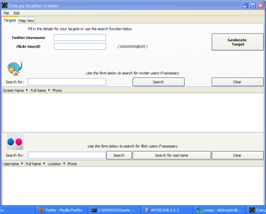

Creepy is and always will be free and open source software. If you find it helpful enough consider donating a small amount to keep the development going. Thanks
creepy is an application that allows you to gather geolocation related information about users from social networking platforms and image hosting services. The information is presented in a map inside the application where all the retrieved data is shown accompanied with relevant information (i.e. what was posted from that specific location) to provide context to the presentation.
 mapview with results
mapview with results
 settings
settings
 creepy running on windows XP
Automatic caching of retrieved information in order to reduce API calls
and the possibility of hiting limit rates.
GUI with navigateable map for better overview of the accumulated information
4 Maps providers (including Google Maps) to use.
Open locations in Google Maps in your browser
Export retrieved locations list as kmz (for Google Earth) or csv files.
Handling twitter authentication in an easy way using oAuth. User credentials
are not shared with the application.
User/target search for twitter and flickr.
Creepy is provided as a PoC tool. Usage of the tool for malicious purposes such as stalking is not endorsed or promoted.
By using this software, you accept that its intention is to raise awareness and to be used as an educational tool .Using creepy for any illegal or unethical purposes is strictly forbidden and the developer assumes no liability. The author disclaim any responsibility for any action of final users. It is the final user’s responsibility to obey all applicable government and legal laws.
Downloading and installing the software signifies that you have read and aggreed to the above disclaimer and the software license.
Add creepy's ppa repository with :
$ sudo add-apt-repository ppa:jkakavas/creepyUpdate package list
$ sudo apt-get updateInstall creepy
$ sudo apt-get install creepy
Creepy is now in the global menu under Applications-> Internet.
Add creepy's ppa repository with :
$ sudo add-apt-repository ppa:jkakavas/creepyUpdate package list
$ sudo apt-get updateInstall creepy
$ sudo apt-get install creepy
Creepy is now in the global menu under Applications-> Internet.
Add creepy's ppa repository with :
$ sudo add-apt-repository ppa:jkakavas/creepy-lucidUpdate package list
$ sudo apt-get updateInstall creepy
$ sudo apt-get install creepy
Creepy is now in the global menu under Applications-> Internet.
Alternatively download and install the .deb from github
Creepy is included in the official BT5 repositories. Install it with :
# apt-get install creepy
creepy is under Backtrack -> Information gathering -> Network analysis -> OSINT Analysis
Add the repository
deb http://people.dsv.su.se/~kakavas/creepy/ binary/to your
/etc/apt/sources.listfile. Update package list
# apt-get updateInstall creepy
# apt-get install creepy
Creepy is now in the global menu under Applications-> Internet.
$ sudo apt-get install creepy
Creepy is now in the global menu under Applications-> Internet.
Download the installer for the latest version from gituhub . All dependencies have been bundled in the executable, nothing more to install. Enjoy creeping!
creepy is available under GPLv3
Yiannis Kakavas (jkakavas_AT_gmail_DOT_com)
@ilektrojohn
Yiannis Kakavas (jkakavas_AT_gmail_DOT_com)
creepy.app__AT__googlemail__DOT__com Cree_pi on twitter
You can download the source code of this project in either zip or tar formats.
You can also clone the project with Git by running:
$ git clone git://github.com/ilektrojohn/creepy